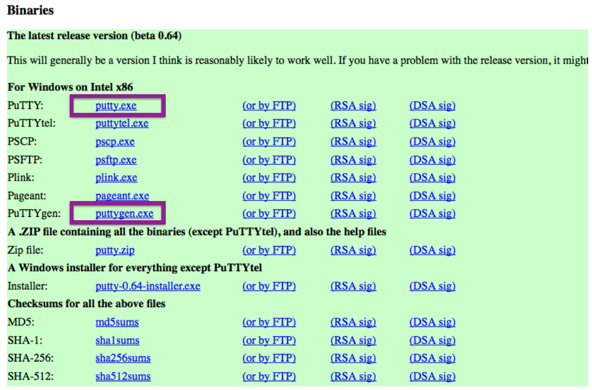
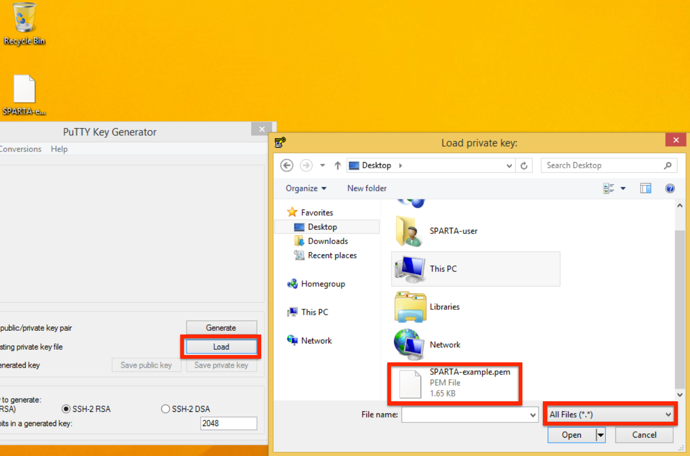
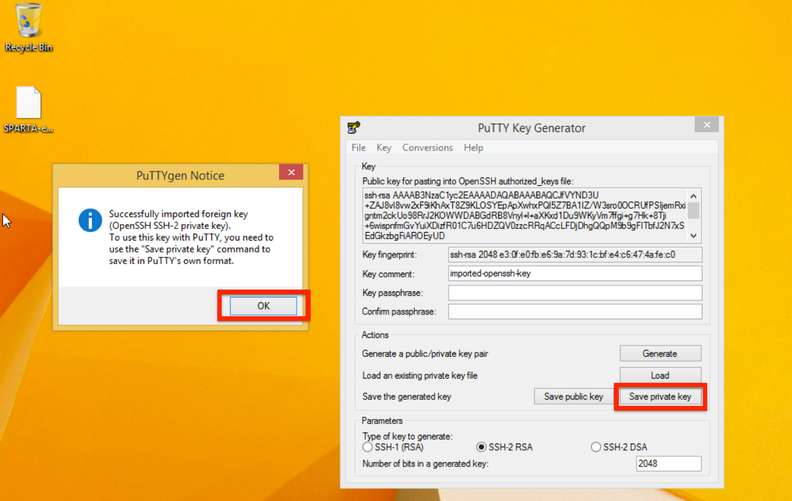
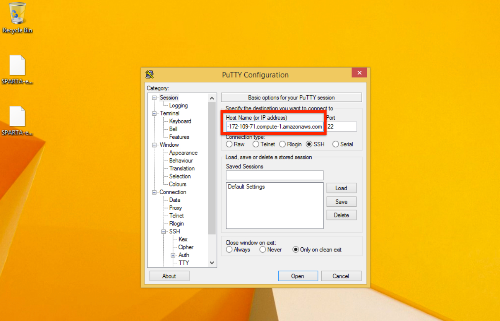
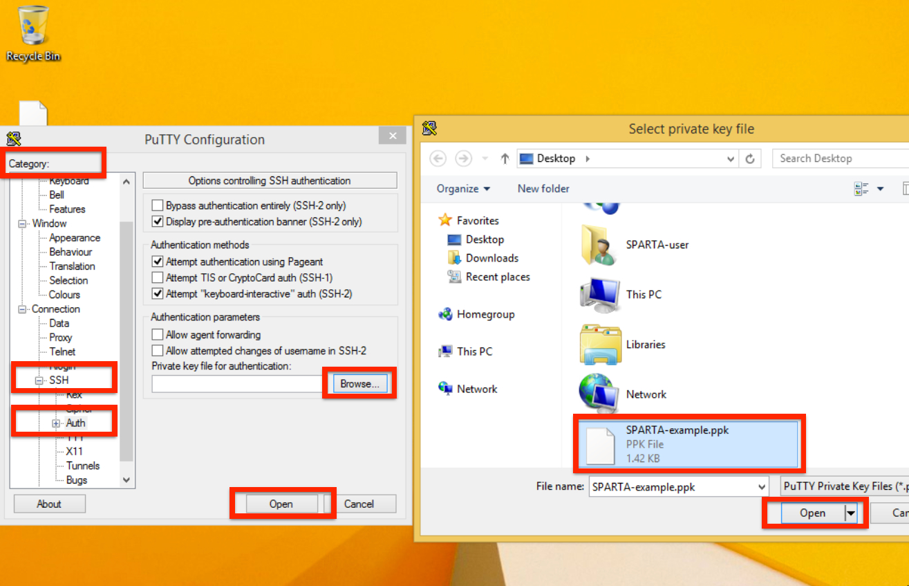
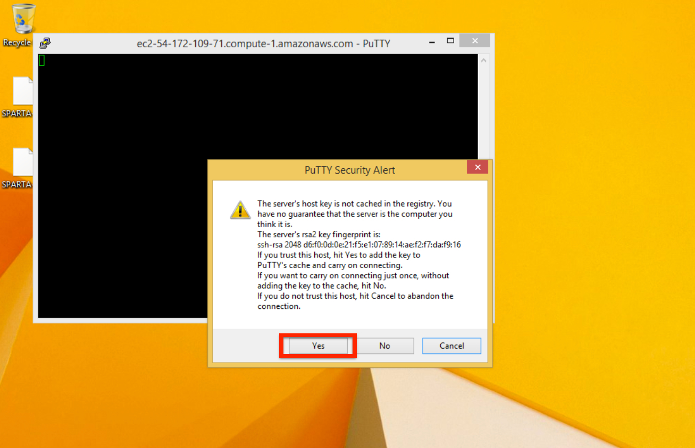
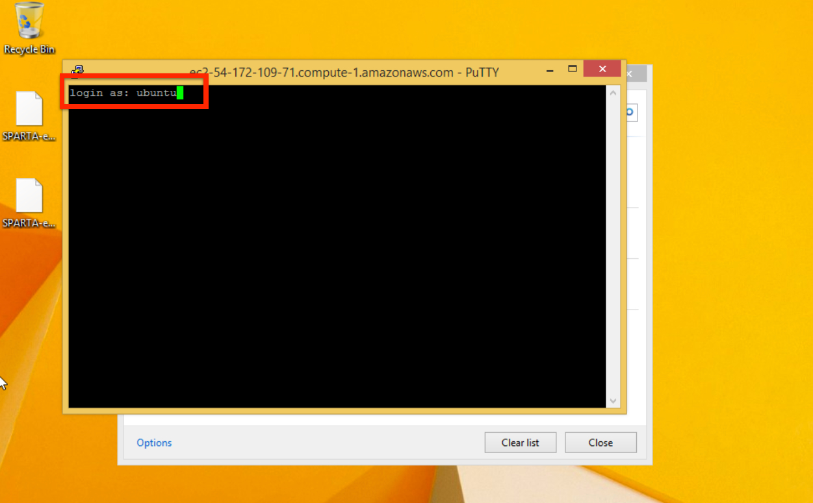

Cloud computing with SPARTA on Amazon EC2¶
The ability to perform large scale data analysis may require computational capacity not found on a personal computing environment. Thus, SPARTA is capable of running in the cloud or on high performance computing environments. In the subsequent tutorial, we describe the analysis process of computing differentially expressed genes using SPARTA and the provided ExampleData in the cloud with Amazon EC2.
Contents:
Create an Amazon Web Services Account
Analyzing the RNA-seq ExampleData with SPARTA
Create an Amazon Web Services Account¶
First we need to create an Amazon Web Services (AWS) account. To do this:
- Navigate to the AWS site
- In the upper right corner, click on the “Sign In to the Console” button
- Enter your e-mail and make sure the “I am a new user” is selected
- Click on the “Sign in using our secure server” button to get started creating your account
- Enter your information and password into the relevant fields and click “Create account”
- Continue to input your necessary information as denoted by the fields with an asterisk (*)
- Read and click on the “I agree to the AWS terms” so that it is checked
- Click on the “Create account and continue” button
- From here you will need to enter your credit card information so that if you decide to go beyond the “Free tier” machines, they can charge you (computing time, even on large machines is pretty cheap). Also, you will need to verify your information and select a support plan that suites you.
Now that you have created your account, we can log into the AWS console if you aren’t already. To do this:
- Navigate to the AWS site.
- Click on the “My Account” in the upper right and select “AWS Management Console” from the menu options
- Log in with your user name and password
- Set your location to “N. Virginia” if you are in the midwest or another relevant location (upper right red circle) and click on EC2 (red circle on the left side of the page)
- Select “Launch Instance”
- Select the “Ubuntu Server 14.04 LTS (HVM), SSD Volume Type” machine image by clicking on “Select”
- For working with the ExampleData we do not need significant hardware capacity, so for now, select the t2.micro instance type (red box). However, if you would like to analyze your own data, either the m4.large or m4.xlarge instance types are reasonable (blue box; these instances will charge you per hour, though are quite cheap). Then, click on “Review and Launch” (orange box).
- Ignore the warning and click “Launch” (orange box)
- Create a new key pair and name it “SPARTA-example” (no quotes; red arrow). Then click on “Download Key Pair”. Save this .pem file. After you download and save your .pem file, click on the “Launch Instances” button.
{kind=link}
- Select the “View Instances” button and wait until your “Instance State” turns green.
- Copy and paste the “Public DNS” into a text document (e.g. TextEdit or Notepad) and save it. This is your Amazon EC2 machine and you will need this to log into it.
To log into the machine, follow either the Mac/Linux version or the Windows version
Mac/Linux Login Procedure¶
To log into the machine you just created, we need to use the .pem file and the Terminal. If you don’t remember how to get to the terminal, see the image in the Introduction in either the Mac OS X tutorial or Linux tutorial.
Move the .pem file from your Downloads folder to your Desktop for the time being.
Start up your terminal and type:
cd ~/Desktop
This will navigate to your Desktop. We will change the permissions to read only for you, the user:
chmod 400 SPARTA-example.pem
Now, let’s log into our machine!
To do this we will type something like this (NOTE THE DNS ADDRESS AFTER THE ‘ubuntu@’ IS NOT REAL. THIS IS WHERE YOU SHOULD PUT YOUR PUBLIC DNS FROM EARLIER):
ssh -i ~/Desktop/SPARTA-example.pem ubuntu@ec2-your-public-dns-goes-here.compute-1.amazonaws.com
What you are doing is logging in using the secure shell (ssh) command with your credentials in the .pem file as the user ‘ubuntu’ to the machine ‘ec2-...-compute-1.amazonaws.com’.
You should now see something like:
ubuntu@ip-345-67-89-10:
Congratulations! You’re now on the cloud computer that you launched earlier!
Windows Login Procedure¶
To log into the machine you just created, we need to use the .pem file, a key generator called PuTTYgen, and a secure shell (ssh) client called PuTTY.
Download PuTTY and PuTTYgen from here.
Move the .pem file from your Downloads folder to your Desktop for the time being.
Open up PuTTYgen and click on “Load”. Navigate to your Desktop and select the SPARTA-example.pem, click “Open”.
PuTTY should present you with a window that says something like “Successfully imported private key...” It also states in the window that we need to use the “Save private key” command. So, let’s do just that.
Click “OK”
Click on “Save private key”. Save it somewhere you know where it is (reasonably easy to find is always a good idea) It may ask you if you want to save it without a passphrase. Click “Yes”. Save it as “SPARTA-example” on the Desktop (no quotes).
Now, let’s log into our machine!
To do this, we will need to open up PuTTY (not PuTTYgen, which is what we were just using). Enter the Host Name (public DNS from earlier) into the “Host Name” box.
Look in the Category section (left-hand side of the window) and navigate to the SSH section (about halfway down the list).
Click on “Auth” in the SSH category and add your PuTTYgen key (ppk) you just made by clicking on “Browse” and selecting the ppk file. Now click “Open”.
The first time you log into a new machine, it may prompt you with a window similar to the one below. This is verifying the RSA fingerprint of the machine. Click “Yes”.
Login as “ubuntu”
You should now see something like:
ubuntu@ip-345-67-89-10:
Congratulations! You’re now on the cloud computer that you launched earlier!